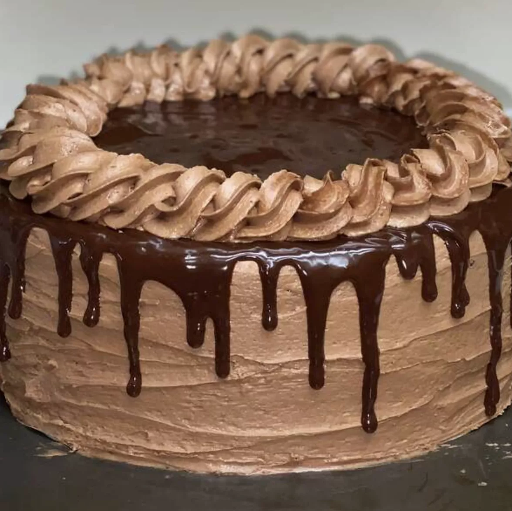

Back-of-the-Box Hershey's Chocolate Cake
A rich super moist chocolate cake with a chocolate buttercream frosting. This is the best cake in the world!
Hershey's Chocolate Cake Ingredients
- Sugar Two cups of white sugar add the perfect amount of sweetness, while locking in the moisture from the other ingredients.
- Flour All-purpose flour provides structure, acts as a thickening agent, and helps build the fluffy texture.
- Cocoa Powder Of course, you'll want to use Hershey's brand unsweetened cocoa powder for this one. It adds the rich, indulgent flavor you know and love.
- leavenersBaking powder and baking soda act as leaveners, which means they cause the batter to expand and give the cake a perfect rise.
- SaltJust a teaspoon of salt is all you'll need to add complexity and highlight the other flavors. It might not seem like a lot, but you'll definitely miss the salt if you skip it.
- EggsWhole eggs affect the cake in a number of ways: They provide structure, add moisture, lend flavor, and contribute to a tender texture.
- MilkWhole milk adds moisture and helps the batter come together smoothly.
- OilVegetable oil ensures your cake will never be dry.
- VanillaTwo teaspoons of vanilla extract add complex flavor and bring out the flavors of the other ingredients, such as the cocoa powder.
- Boiling WaterYou might be wondering why this recipe calls for a cup of boiling water. It intensifies the chocolatey flavor, contributes to the fluffy texture, and reacts with the leaveners to create an even higher rise.
Directions
- step: Preheat the oven to 350 degrees F (175 degrees C). Grease and flour two 9-inch round cake pans.
- step: Make cake: Stir together sugar, flour, cocoa, baking soda, baking powder, and salt in a bowl.
- step: Add eggs, milk, oil, and vanilla; mix for 3 minutes with an electric mixer. Stir in boiling water by hand.
- step: Pour evenly into the prepared pans.
- step: Bake in the preheated oven until a toothpick inserted into the centers comes out clean, 30 to 35 minutes. Cool for 10 minutes before removing from pans to cool completely.
- step: While cakes cool, make frosting: Cream butter with an electric mixer until light and fluffy. Stir in confectioners' sugar and cocoa alternately with milk and vanilla. Beat to a smooth spreading consistency.
- step: Split the layers of the cooled cake horizontally, cover the top of each layer with frosting, then stack them onto a serving plate.
- step: Frost the outside of the cake with remaining frosting.